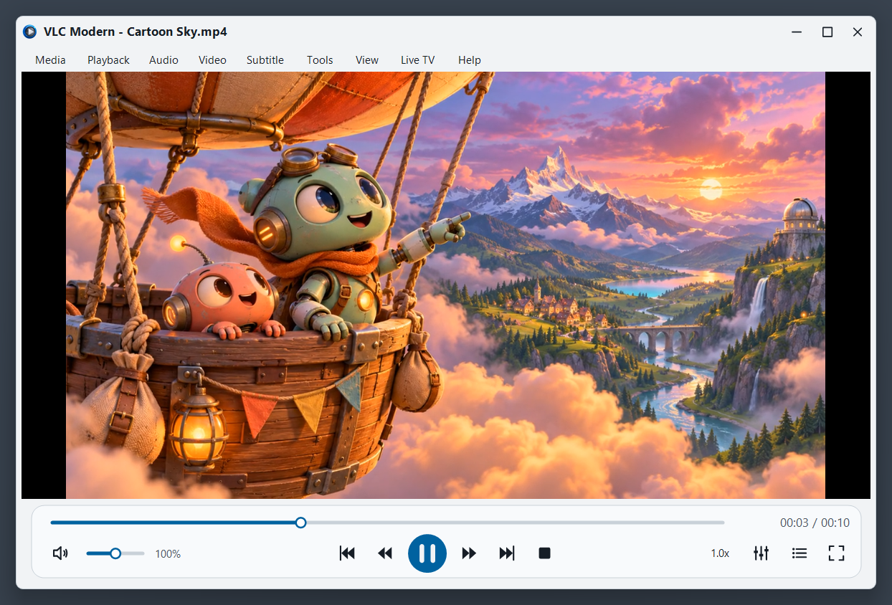

Play and organizeشغّل ونظّم
Keep a docked playlist, resume a video, preview the timeline, and use configurable keyboard shortcuts.استخدم قائمة تشغيل جانبية، واستأنف الفيديو، وعاين المشاهد من شريط التقدّم، وخصّص اختصارات الكيبورد.
Windows · Public Betaويندوز · نسخة تجريبية عامة
Play local video and music, open online streams, and connect your IPTV sources in a Windows player powered by LibVLC.شغّل الفيديو والموسيقى من جهازك، وافتح روابط البث ومصادر IPTV في مشغّل ويندوز يعمل بمحرك LibVLC.

Keep a docked playlist, resume a video, preview the timeline, and use configurable keyboard shortcuts.استخدم قائمة تشغيل جانبية، واستأنف الفيديو، وعاين المشاهد من شريط التقدّم، وخصّص اختصارات الكيبورد.
Connect your own Xtream Codes or Stalker provider, or load an M3U file or URL.أضف مزوّد Xtream Codes أو Stalker، أو افتح رابط أو ملف M3U.
Adjust audio with the equalizer, synchronize subtitles, convert media, and export precise MP4 clips with FFmpeg.اضبط الصوت بالإكولايزر، وزامن الترجمة، وحوّل الوسائط أو قصّ مقاطع MP4 بدقة باستخدام FFmpeg.
Extract the ZIP and run VLCModern.exe. The beta is still in development.فكّ الضغط وشغّل VLCModern.exe. النسخة التجريبية لسه تحت التطوير.
Includes playback plugins and FFmpeg for precise MP4 clipping on 64-bit Windows.تشمل إضافات التشغيل وFFmpeg للقص الدقيق على ويندوز 64 بت.
Download Full ZIPتحميل Full ZIPStart with a smaller package and install playback plugins and FFmpeg from Settings → Components.ابدأ بحزمة أصغر وثبّت إضافات التشغيل وFFmpeg من الإعدادات ← Components.
Download Lite ZIPتحميل Lite ZIPBoth editions include portable Node.js for YouTube on 64-bit Windows.النسختين فيهما Node.js محمول لتشغيل YouTube على ويندوز 64 بت.